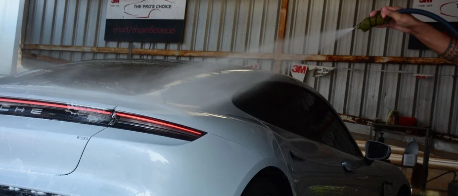
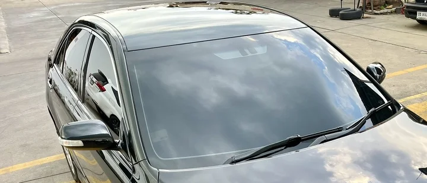

การล้างรถคือจุดเริ่มต้นของการเสื่อมผิว
รอยขนแมวจำนวนมากไม่ได้เกิดจากการขัดสี แต่เกิดจากขั้นตอนการล้างที่ไม่ควบคุมแรงเสียดสี
ฟองหนาไม่ได้แปลว่าปลอดภัย ผ้าไม่สะอาดไม่ได้แปลว่าไร้รอย ระบบที่ดีต้องควบคุมกระบวนการทั้งหมด
เราไม่ได้ล้างให้สะอาดที่สุด เราล้างให้ “ปลอดภัยที่สุด”
Controlled Variables
การล้างที่ปลอดภัยไม่ขึ้นกับผลิตภัณฑ์เพียงอย่างเดียว แต่ขึ้นกับการควบคุมตัวแปรทั้งหมดในกระบวนการ

Car Wash ทำอะไรได้จริง
| คุณสมบัติ | ทำได้ | ไม่ได้ |
|---|---|---|
| ลดแรงเสียดสีขณะล้าง | ✓ | |
| เตรียมผิวก่อนขัดสี | ✓ | |
| ลดการสะสมคราบระยะยาว | ✓ | |
| ลบรอยลึก | ✗ | |
| แทนการขัดสี | ✗ |
Car Wash เป็นขั้นตอนควบคุมผิว ไม่ใช่ขั้นตอนแก้ไขผิว
Wash Program Architecture
W1 — Maintenance Wash
สำหรับรถใหม่ หรือรถที่เคลือบแล้ว เน้นรักษาสภาพผิวโดยไม่เพิ่มความเสี่ยง
W2 — Decontamination Wash
ล้างพร้อมกำจัดคราบฝังแน่น Iron remover / Clay / Surface reset
W3 — Intensive Preparation
เตรียมผิวก่อน Paint Correction หรือ Ceramic Coating
ราคาโปรแกรมล้างรถ
| รหัส | โปรแกรม | รายละเอียด | S | M | L | XL |
|---|---|---|---|---|---|---|
| B1 | ล้างรถ | ล้างภายนอกทั่วไป | 180 | 220 | 240 | 300 |
| B2 | ล้างรถ + ดูดฝุ่น | ล้างภายนอก + ดูดฝุ่นภายใน | 240 | 280 | 320 | 460 |
| B3 | ล้างรถ + ดูดฝุ่น + ล้างพิเศษ | เพิ่มขั้นตอนพิเศษ (เช่น คราบฝังแน่น / ดีเทลเบาะจุด) | 400 | 500 | 600 | 700 |
| BX | แพ็กเกจล้างรถ 12 ครั้ง | (B2) ใช้งานภายใน 1 ปี | 2,200 | 2,600 | 3,000 | 4,400 |
S = รถเก๋งเล็ก/กลาง (Swift, Yaris, Civic, Altis) ·
M = รถใหญ่/B-SUV (Accord, Camry, ATTO3, Yaris Cross) ·
L = รถใหญ่/SUV (CR-V, Fortuner, X3, GLC) ·
XL = รถใหญ่/SUV Full Size (Alphard, Staria)
ราคาอาจเปลี่ยนแปลงตามสภาพรถและโปรโมชั่น ณ ช่วงเวลานั้น
ราคาบำรุงรักษาเนื้อสี (Paint Care / Wax)
เหมาะสำหรับรถสภาพสีปกติ ต้องการความเงา ลื่น และปกป้องผิวสีเบื้องต้น
| รหัส | โปรแกรม | รายละเอียด | S | M | L | XL |
|---|---|---|---|---|---|---|
| W1 | Basic Wax | ล้างรถ + เคลือบเงา 3M Paste Wax | 400 | 500 | 600 | 700 |
| W2 | Wax Plus | ล้างรถ + ลูบดินน้ำมัน + เคลือบ 3M Paste Wax | 600 | 700 | 800 | 900 |
| W3 | Premium Wax | ล้างรถ + ลูบดินน้ำมัน + เคลือบ 3M Premium Wax | 800 | 900 | 1,000 | 1,200 |
รหัส W1–W3 ในตารางนี้หมายถึงระดับโปรแกรม Paint Care / Wax ซึ่งเป็นคนละส่วนกับ Wash Program Architecture (W1–W3) ด้านบนที่อธิบายแนวคิดการล้างตามระดับความเสี่ยงของผิว
บริการดูแลพิเศษ
บริการเสริมสำหรับการดูแลรถแบบเฉพาะจุด สามารถเลือกเพิ่มร่วมกับโปรแกรมล้างรถได้
| รหัส | โปรแกรม | รายละเอียด | ราคา |
|---|---|---|---|
| E1 | ทำความสะอาดเคลือบห้องเครื่อง | ล้าง/เคลือบเพื่อความสะอาดและป้องกัน | เริ่ม 400 |
| E2 | ขัดจี้ยางขอบยาง | ลบคราบยางขอบยางบนผิวสี | เริ่ม 500 |
| E3 | ขัดทำความสะอาดเบาะ | ฟอกฟู/ทำความสะอาดเบาะผ้า-หนัง (2,500–6,000 ตามขนาดรถ) | 2,500+ |
| E4 | ทำความสะอาดพื้นพรม (ซัก) | ซักพรมทำความสะอาดลึก (3,000–6,000 ตามขนาดรถ) | 3,000+ |
| E5 | ทำความสะอาดภายในรถ | เช่น คราบน้ำ / กาแฟ / เชอร่า | เริ่ม 800 |
| E6 | อบหมอกฆ่าเชื้อ 3M Air Freshener | กำจัดเชื้อโรคและกลิ่น | 1,200 |
| E7 | ขัดเคลือบกระจก | เพิ่มความใส & การไล่น้ำฝน | เริ่ม 200 |
| E8 | ขัดไฟหน้าคู่ | ฟื้นฟูความใสไฟหน้า | 900 |
E3–E4 ราคาแปรผันตามขนาดรถ (S/M/L/XL) กรุณาสอบถามราคาที่ตรงกับรุ่นรถของท่าน
Controlled Process
Two-Bucket Method Grit Guard Microfiber Separation System
ทุกขั้นตอนถูกแยกอุปกรณ์และโซนใช้งานอย่างชัดเจน เพื่อลดการถ่ายโอนสิ่งปนเปื้อนข้ามพื้นผิว

Wash คือจุดเริ่มต้นของระบบ Surface Control
ก่อน Ceramic Coating หลัง Ceramic Coating ก่อน PPF Maintenance Film
หาก Wash ไม่เสถียร ระบบอื่นจะเสื่อมเร็วขึ้นโดยอัตโนมัติ